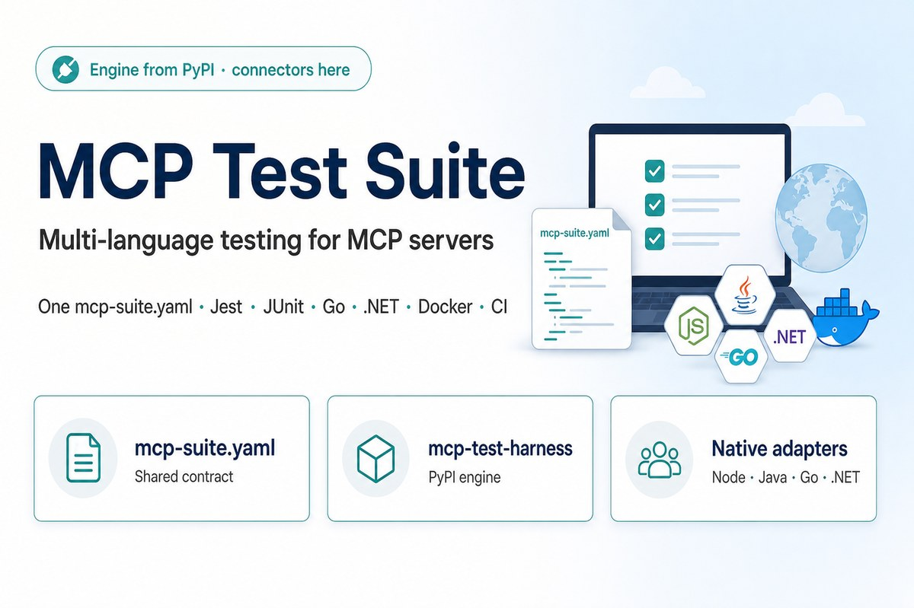
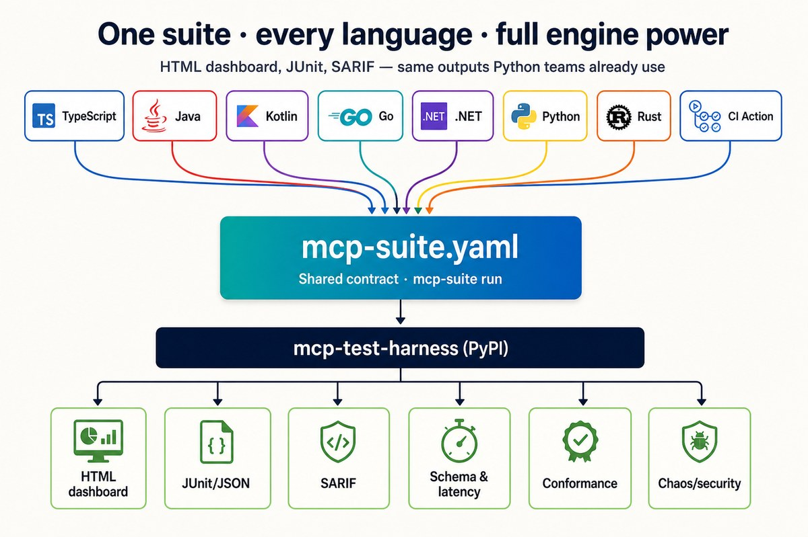
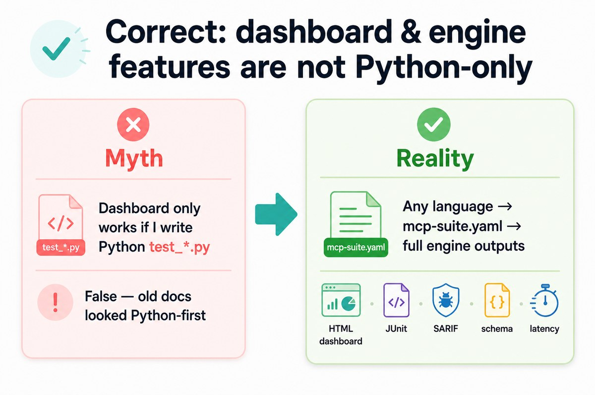
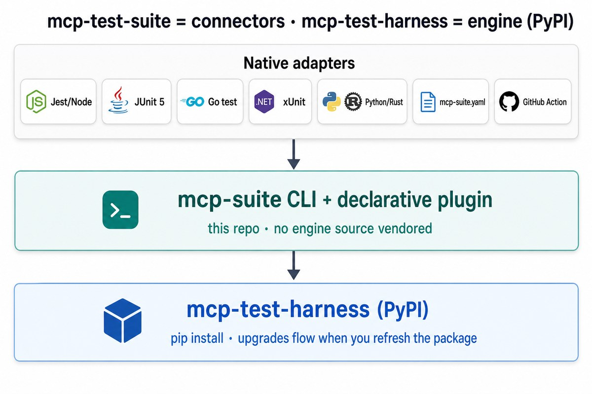
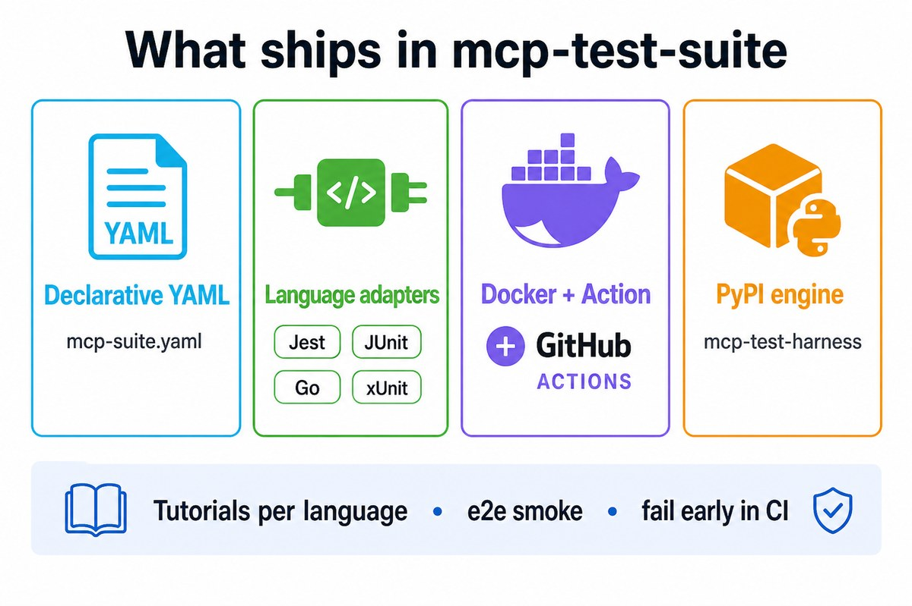
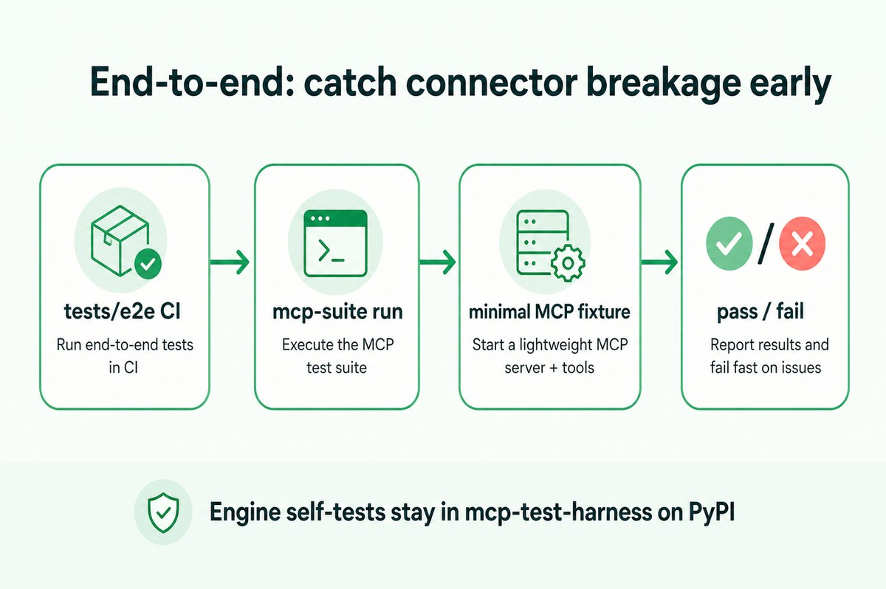

Multi-language · full engine
HTML dashboard, JUnit, SARIF, schema, and latency are not Python-only.
Any language shares mcp-suite.yaml and the same PyPI engine outputs.


Architecture
Adapters and YAML live here. The engine is installed from PyPI — updates flow when you upgrade the package.

What ships here

End-to-end confidence

Install
pip install "mcp-test-harness>=3.0.9"
pip install .
mcp-suite run --suite mcp-suite.yamlLanguages
- YAML (any language)
- TypeScript / Jest
- Java / Kotlin / JUnit 5
- Go · .NET · Rust · Python
Engine deep-dives live in mcp-test-harness (PyPI), not this site.